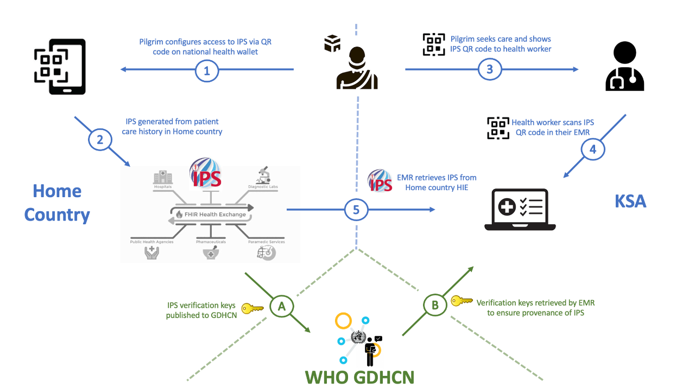

This Implementation Guide is intended to support the utilization of variable International Patient Summary (IPS) documents during pilgrimage leveraging WHO Global Digital Health Certification Network (GDHCN) global public health infrastructure.
Summary
This implementation guide includes a machine-readable representation of WHO guidelines for verifiable IPS during pilgrimage. It explicitly encodes computer-interoperable logic, including data models, terminologies, and logic expressions, in a computable language to support implementation of IPS during pilgrimage usage scenario. This Implementation Guide leverages the WHO Global Digital Health Certification Network (GDHCN).
The guide is part of the WHO SMART Guidelines approach to support countries to integrate WHO global health and data recommendations into digital systems accurately and consistently. It defines a series of FHIR Resources, Profiles, Extensions, and Terminology.
Supporting guidance, recommendations, resources, and standards are included in the Bibliography and Dependencies.
Eligible Participants may request to join through the The Letter of Application

Follow one pilgrim through these steps in The Pilgrim’s Journey.
About this implementation guide
This implementation guide is broken into the following levels of knowledge representation:
- Home - contains references to the guidance, guidelines, policies and recommendations underpinning this implementation guide.
- Business Requirements - contains the requirements for this implementation guide including the definition of key concepts, use cases, and a data dictionary.
- Data Models and Exchange - contains the data models and data exchange protocols with actors and transactions defined.
- Deployment Guidance - contains relevant technical specifications and guidance, testing resources, reference implementation materials, and supporting guidance for adaptation to local contexts.
This guide assumes use of the following resources:
- MHD Folder
- IPS Patient
- IPS Immunization
- For a complete listing of the artifacts defined in this implementation guide, refer to the Artifact Index.
- A complete offline copy of this implementation guide can be found on the Downloads page.
- This guide utilizes the International Patient Summary(IPS) as a base for defining immunizations and expects that most data captured will be presented in conformance with the resources defined as part of that implementation guide.
- This Implementation Guide makes use of Clinical Quality Language for the decision support artifacts including the PlanDefinitions and Measures. They are used to express how a calculation should occur and can be used with a CQL engine in order to process the decision or indicator directly from the applicable FHIR resources. Links to this specification, the FHIR Clinical Practice Guidelines Specification, and other helpful resources can be found in the Support dropdown.
Disclaimer
The specification herewith documented is a demo working specification and may not be used for any implementation purposes. This draft is provided without warranty of completeness or consistency and the official publication supersedes this draft. No liability can be inferred from the use or misuse of this specification or its consequences.
IP statements
⟦not rendered: ip-statements.xhtml⟧ — the IG Publisher renders it from a source this build does not hold; no renderer was given to this build.
Cross-version analysis
⟦not rendered: cross-version-analysis.xhtml⟧ — the IG Publisher renders it from a source this build does not hold; no renderer was given to this build.
Dependencies
| IG | Package | FHIR | Comment |
|---|---|---|---|
| hl7.terminology.r4 | hl7.terminology.r4#7.5.0 | not in the package cache this build read, so what it depends on is not shown | |
| hl7.fhir.uv.extensions.r4 | hl7.fhir.uv.extensions.r4#5.4.0 | not in the package cache this build read, so what it depends on is not shown | |
| smart.who.int.base | smart.who.int.base#0.1.0 | not in the package cache this build read, so what it depends on is not shown | |
| ihe.iti.mcsd | ihe.iti.mcsd#3.8.0 | not in the package cache this build read, so what it depends on is not shown | |
| hl7.fhir.uv.ips | hl7.fhir.uv.ips#1.1.0 | not in the package cache this build read, so what it depends on is not shown | |
| hl7.fhir.uv.sdc | hl7.fhir.uv.sdc#3.0.0 | not in the package cache this build read, so what it depends on is not shown | |
| hl7.fhir.uv.cpg | hl7.fhir.uv.cpg#2.0.0 | not in the package cache this build read, so what it depends on is not shown | |
| ihe.iti.pcf | ihe.iti.pcf#1.1.0 | not in the package cache this build read, so what it depends on is not shown | |
| ihe.iti.mhd | ihe.iti.mhd#4.2.2 | not in the package cache this build read, so what it depends on is not shown |
Globals
There are no Global profiles defined.